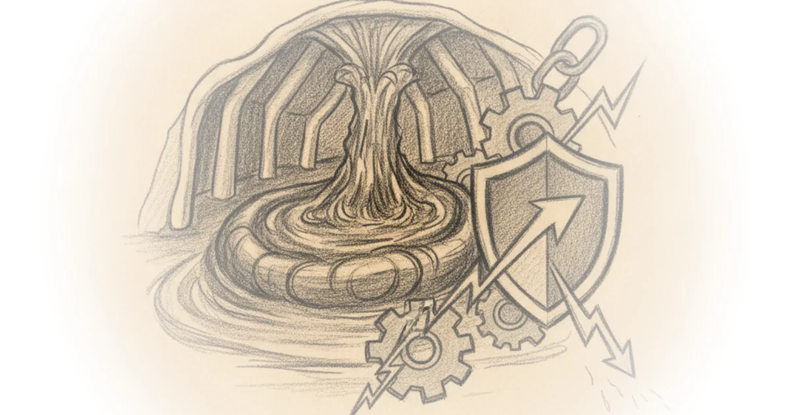

This piece cuts through the noise of emergency oil releases by revealing the physical reality of the Strategic Petroleum Reserve: it is not an infinite tap, but a decaying geological structure with hard mechanical limits. Brian Potter's analysis is essential right now because it shifts the debate from political posturing to the hard constraints of salt domes and brine pressure, warning that the very act of using the reserve to stabilize markets may be eroding its future capacity.
The Birth of a Buffer
Potter traces the reserve's origins not to modern geopolitics, but to a specific, terrifying moment of vulnerability. He notes that the concept was floated as early as 1912, yet it "wasn't until the 1973 OAPEC oil embargo that the idea for a petroleum reserve for both civilian and government use stuck." The author effectively uses the 1973 crisis to illustrate the stakes: "gas prices jumped by over 40%, and widespread gasoline shortages occurred." This historical anchor is crucial; it reminds us that the reserve was born from a failure of supply chains, not just a theoretical risk.

The article highlights how the Nixon administration commissioned a study that concluded "the most cost-effective method would be underground storage in caverns hollowed out from large salt deposits known as 'salt domes.'" Potter's framing here is precise, distinguishing the SPR from simple tank farms. He explains that the choice of salt domes was driven by geology: "Because rock salt is largely impermeable to oil or gas, hollowed-out caverns within salt domes were a potentially attractive place to store large amounts of crude oil." This technical detail is often glossed over in policy debates, yet it is the foundation of the entire system.
"The SPR was created to insulate the US from oil supply shocks: to make up for shortfalls and prevent steep price increases should oil imports be interrupted."
Critics might argue that relying on a single geological feature creates a new kind of fragility, but Potter's evidence suggests the alternative—surface storage—was economically and logistically unviable at the scale required.
Engineering the Impossible
The construction narrative Potter weaves is a masterclass in how infrastructure projects can spiral when ambition outpaces management. He details how the project was "soon mired in setbacks" due to inexperience and corruption. Potter writes that contractors "engaged in 'extensive fraud'; used valves were sold as new, and drill bits were purchased, stolen, and then re-sold back to the government." This is a stark reminder that the physical security of the reserve was compromised by human error and malfeasance before it was even full.
The author also highlights the environmental friction that shaped the reserve's footprint. Local opposition forced changes to brine disposal, with "fishermen, worried about the potential impact on fish and shrimp populations," successfully demanding pipelines extend farther into the Gulf. Potter notes that by the end of 1978, the office had completed "25 NEPA-required environmental impact statements." This context is vital for understanding why the project took so long and cost so much more than projected. The cost estimates doubled in just two years, rising from $766 million to $1.47 billion, a figure that would be roughly $7.5 billion in 2026 dollars.
"Collectively, the technical, political, and managerial challenges encountered when building the SPR drove up costs and pushed back delivery dates."
The article's strength lies in its refusal to romanticize the build. Potter points out that the Phase I caverns "ultimately had 87 million barrels less storage capacity than first anticipated" due to pressure limitations. This is a critical nuance: the reserve's theoretical maximum has never matched its physical reality.
The Physics of Depletion
The most compelling section of Potter's work addresses the current operational crisis: the reserve is not static. He explains that "cavern creep" is a constant force, where the weight of the ground squeezes the caverns, compressing them over time. "The SPR loses up to 2.4 million barrels (~0.33%) of storage capacity each year due to the effects of cavern creep," Potter writes. This is a profound insight for readers following recent releases; every time the administration draws down the reserve, they are not just moving oil, they are accelerating the physical degradation of the storage facility.
The mechanism of release is deceptively simple: water is pumped down to force oil out. However, Potter warns that "if that pressure is relieved, which occurs during well repair operations known as 'workovers,' cavern creep can accelerate." This creates a dangerous feedback loop where the act of maintaining the infrastructure to release oil actually reduces the infrastructure's capacity.
"We think of physical infrastructure as something relatively static and unchanging, but in the SPR various forces are constantly reshaping the caverns."
This framing challenges the assumption that the reserve is a plug-and-play solution. Potter's analysis suggests that frequent, large-scale releases may permanently damage the caverns, making future emergency responses more difficult. The article notes that some caverns were "incapable of holding as much petroleum as originally projected due to pressure limitations," a warning that remains relevant today.
Critics might note that the 300 million barrel "minimum safe level" is a contested figure, but Potter's broader point stands: the reserve has hard limits that are not widely understood by policymakers. The fact that the reserve dipped below this threshold recently underscores the urgency of understanding these physical constraints.
"Given the ongoing importance of the SPR, it's worth understanding how it was built and how it works now."
Bottom Line
Potter's analysis is a necessary corrective to the political theater surrounding oil releases, grounding the debate in the unyielding physics of salt domes and the reality of geological decay. The piece's greatest strength is its revelation that the reserve is a shrinking asset, not an infinite one, yet its vulnerability lies in the lack of a clear strategy for replenishment or repair of the caverns. Readers should watch not just how much oil is released, but the long-term impact on the reserve's structural integrity.